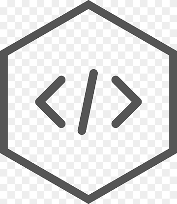

Enlace CSS a HTML:
Para aplicar estilos CSS a un documento HTML, generalmente se enlaza un archivo CSS externo al documento HTML utilizando la etiqueta "link" en la sección "head" del documento HTML.
Estilos en línea:

También es posible aplicar estilos directamente en línea utilizando el atributo style en elementos HTML.
Selectores CSS:

Los estilos se aplican a los elementos HTML mediante selectores CSS. Un selector CSS puede ser el nombre de un elemento HTML, una clase o un ID.
Reglas CSS:

Las reglas CSS consisten en un selector seguido de un bloque de declaraciones de estilo. Cada declaración tiene una propiedad y un valor separados por dos puntos, y están separadas por punto y coma.
UNIVERSIDAD AUTONOMA DE CHIAPAS
LICENCIATURA EN SISTEMAS COMPUTACIONALES
5º GRADO GRUPO "J"
© Copyright 2024.Rodriguez Ocaña Maria Fernanda